the voice
of your soul
голос
вашей души
Music, mantra, and the practices that keep your authentic voice open.
Музыка, мантра и практики, что хранят ваш подлинный голос открытым.
Listen
Слушать
Jane Stark has been turning prayer, medicine, and love into music since 2011. Her catalogue moves between mantra, lullaby, and original songs in Russian, English, and Sanskrit — most of it tuned to 432 Hz, all of it shaped by training in Varanasi and New York and a tour through Russia with Krishna Das.
С 2011 года Женя Старк превращает молитву, медицину и любовь в музыку. Её каталог переходит от мантры к колыбельной и к авторским песням на русском, английском и санскрите — большая часть звучит в строе 432 Гц, и всё это сложилось из обучения в Варанаси и Нью-Йорке и тура по России с Кришной Дасом.


About Jane
О Жене
Jane is a pathfinder. Someone who has spent 15 years searching for peace, moving through communities, building new ones, always looking outside the mainstream for what is real and what endures. She is a guide of self-awareness practices, artist, composer, singer, poet. She holds a PhD in world economy, founded the Noble Poetry Club theatre in Dubai, and has published three poetry books. Her musical education merges eastern (Varanasi, India) and western (New York, USA) schools.
Женя — следопыт. Человек, который пятнадцать лет ищет покой: проходит через сообщества, строит новые, всегда смотрит за пределы мейнстрима — туда, где живёт настоящее и долговечное. Она — проводник практик самоосознания, художник, композитор, певица, поэт. У неё степень PhD по мировой экономике; она основала театр Noble Poetry Club в Дубае и выпустила три поэтические книги. Её музыкальное образование соединяет восточную школу (Варанаси, Индия) и западную (Нью-Йорк, США).
Born in Lithuania, she has lived in Russia, Italy, the USA, Belgium, the UAE, and Georgia, and for the past six years in Costa Rica.
Родилась в Литве, жила в России, Италии, США, Бельгии, ОАЭ и Грузии. Последние шесть лет — в Коста-Рике.
She is interested in prayer, medicine, and love turned into music. She performs in a way that often moves audiences to tears and to silence.
Ей интересно превращать молитву, медицину и любовь в музыку. Её выступления часто оставляют зал в слезах и в тишине.
She does not call her work a method. The kirtans, the constellations, the dances, the voice sessions, the painting, the poetry — these are simply the shapes her practice takes. The thread that runs through them is older than any of them.
Она не называет это методом. Киртаны, расстановки, танцы, голосовые сессии, живопись, поэзия — это лишь формы, которые принимает её практика. Нить, проходящая через них, старше каждой из них.
Drop the story.
Be with the feeling.
Отпустите историю.
Останьтесь с чувством.
Pain is an inevitable fact of life. Healing from it is our responsibility.
Боль — неизбежная часть жизни. Исцеление от неё — наша ответственность.
Traditional therapy works top-down: change the way you think to change how you feel. Constellations work the other way. The body moves intuitively, without needing to explain or reason. By removing the emotional charge of a story, you strip painful memories of their power and return that power to yourself.
Традиционная терапия идёт сверху вниз: меняешь то, как думаешь, чтобы изменить то, как чувствуешь. Расстановки работают иначе. Тело движется интуитивно — без необходимости объяснять или анализировать. Снимая эмоциональный заряд с истории, вы лишаете болезненные воспоминания силы — и возвращаете эту силу себе.
After a single session, participants report
После одной сессии участники отмечают
That is one session. Imagine immersion.
И это — одна сессия. Представьте погружение.
Four ways to work with Jane
Четыре способа работать с Женей
Six-week online container
Шестинедельная онлайн-группа
A small online group in English, one call per week. Each participant receives a full constellation in turn; the rest of the group serves as the field — stand-in figures whose intuitive movements reveal the system. Six weeks, six gatherings, one transformation.
Небольшая онлайн-группа на английском, по одной встрече в неделю. Каждый участник по очереди получает полную расстановку; остальные становятся полем — заместителями, чьи интуитивные движения раскрывают систему. Шесть недель, шесть встреч, одно преображение.
Join the next group →Записаться в ближайшую группу →In-person & private sessions
Личные и частные сессии
Available in Costa Rica or, by arrangement, elsewhere. One-to-one work or small groups, on request.
Доступны в Коста-Рике или, по договорённости, в других местах. Индивидуальная работа или малые группы — по запросу.
Enquire →Узнать →Systemic mapping
Системное картирование
The same lineage applied to bigger living systems: organizations, nations, ecosystems. Premium online format with trained stand-ins. For founders, leadership teams, and anyone trying to feel into a collective body that the spreadsheets cannot show.
Та же традиция, применённая к большим живым системам: организациям, странам, экосистемам. Премиальный онлайн-формат с обученными заместителями. Для основателей, руководящих команд и всех, кто пытается почувствовать коллективное тело, которое не видно в таблицах.
Enquire about a session →Узнать о сессии →Leela
Лила
The ancient Indian game of self-knowledge — sometimes called the original board game, dating back several thousand years. The dice are the cosmos; the squares are the planes of consciousness; the player is the soul. A single Leela session can reveal the question you didn't know you were living, and where on the path you stand.
Древнеиндийская игра самопознания — её называют первой настольной игрой, ей несколько тысяч лет. Кости — это космос; клетки — планы сознания; игрок — душа. Одна сессия Лилы может раскрыть вопрос, которым вы живёте, сами того не зная, — и показать, где вы стоите на пути.
Register for the next game →Записаться на ближайшую игру →A sacred gathering
in the heart of the jungle
Священное собрание
в сердце джунглей
Through kirtan, meditation, and devotional practice, Jane invites you to dissolve into sound, reconnect with your essence, and return home to yourself. Whether you are new to kirtan or a lifelong practitioner, you are welcome exactly as you are.
Через киртан, медитацию и преданную практику Женя приглашает раствориться в звуке, восстановить связь со своей сутью и вернуться домой — к себе. Новичок вы в киртане или давний практик — вас здесь ждут именно такими, какие вы есть.
Each morning begins at sunrise with mantra and meditation. Each evening closes with deep kirtan under the stars.
Каждое утро начинается на рассвете с мантры и медитации. Каждый вечер закрывается глубоким киртаном под звёздами.
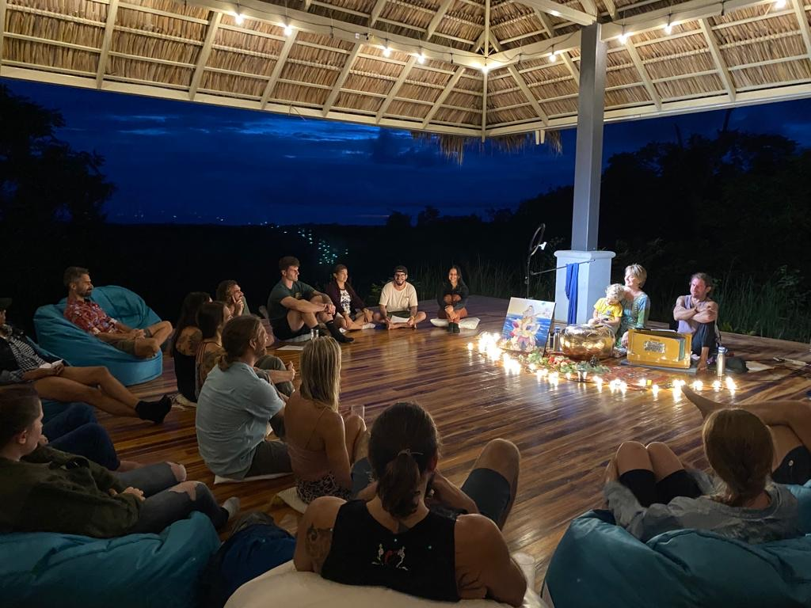
Upcoming
Ближайшее
14 – 21 February 2027
Seven days of sacred song. Costa Rica.
14 – 21 февраля 2027
Семь дней священного пения. Коста-Рика.
Spaces are limited to preserve the intimacy of the gathering.
Мест немного — чтобы сохранить интимность собрания.
Reserve your placeЗабронировать местоLive alongside us
Жить рядом с нами
A few weeks a year, our guesthouse opens to one guest, or one couple, at a time.
Несколько недель в году наш гостевой дом открыт — для одного гостя или одной пары за раз.
You wake with the jungle. You join us for morning yoga, OM-chanting, and small family kirtans. You walk the permaculture garden, learn the trees, eat what the day gives. You spend the afternoons however your soul asks — writing, painting, swimming, sitting still — and sit with us again at sundown.
Вы просыпаетесь вместе с джунглями. Присоединяетесь к нам на утреннюю йогу, пение ОМ и небольшие семейные киртаны. Гуляете по пермакультурному саду, узнаёте деревья, едите то, что даёт день. Вторую половину дня проводите так, как просит душа — пишете, рисуете, плаваете, сидите в тишине — и снова собираетесь с нами на закате.
This is not a wellness resort. There is no air conditioning. No hot water. No menu. We live simply, and you live as we live. That is the offering.
Это не велнес-курорт. Здесь нет кондиционера. Нет горячей воды. Нет меню. Мы живём просто — и вы живёте так, как живём мы. Это и есть приглашение.
What you receive instead is what no resort can sell you: depth. Time alongside Jane outside the format of a session or a stage. The slow re-tuning of a nervous system that has forgotten what it is to be a guest in a real home.
Взамен вы получаете то, что не продаст ни один курорт: глубину. Время рядом с Женей вне формата сессии или сцены. Медленное возвращение нервной системы к памяти о том, что значит быть гостем в настоящем доме.
Enquire about a stayУзнать о пребыванииVoice Awakening
Пробуждение голоса
A gentle one-to-one online space to reconnect with your voice — not only as a musical instrument, but as a pathway to presence, confidence, breath, emotion, and self-awareness.
Бережное онлайн-пространство один на один, чтобы восстановить связь со своим голосом — не только как с музыкальным инструментом, но как с путём к присутствию, уверенности, дыханию, чувству и самоосознанию.
In these private Zoom sessions, we explore vocal freedom and resonance, breath and grounding, Indian devotional repertoire, mantra and mysticism, songs that deeply move you, and emotional expression through the voice.
В этих личных Zoom-сессиях мы исследуем свободу и резонанс голоса, дыхание и заземление, индийский преданный репертуар, мантру и мистику, песни, что трогают вас до глубины, и выражение чувств через голос.
These sessions are for complete beginners and for anyone longing to feel more alive, open, and authentic through sound.
Эти сессии — для полных новичков и для всех, кто стремится почувствовать себя живее, открытее и подлиннее через звук.
Book a sessionЗаписаться на сессиюDances of Universal Peace
Танцы Всеобщего Мира
Simple circle dances and chants drawn from the world's spiritual traditions — Sufi, Hindu, Buddhist, Christian, Indigenous. No experience required, no choreography to learn. The dance is the prayer.
Простые танцы в кругу и распевы из духовных традиций мира — суфийских, индуистских, буддийских, христианских, коренных народов. Опыт не нужен, хореографию учить не надо. Танец — это молитва.
Jane leads the Dances at gatherings and as part of her retreats.
Женя ведёт Танцы на собраниях и в рамках своих ретритов.
See upcoming dancesБлижайшие танцыPoetry
Стихи
Three books, written in collaboration with Leonid Ilushin. Reflections (Отражения) and I Live You are full poetry collections in Russian. Moon Songs is a bilingual hardcover of original lullabies — Russian and English side by side — written for Jane's children and yours.
Три книги, написанные в соавторстве с Леонидом Илюшиным. Отражения и Я живу тебя — полные поэтические сборники на русском. Moon Songs — двуязычный сборник колыбельных в твёрдом переплёте: русский и английский рядом — для детей Жени и для ваших.
Jane is also the founder of the Noble Poetry Club theatre in Dubai.
Женя также основательница театра Noble Poetry Club в Дубае.
Reflections
Отражения
A poetry collection in Russian, written with Leonid Ilushin.
Поэтический сборник на русском, написанный с Леонидом Илюшиным.
Buy on Lulu →Купить на Lulu →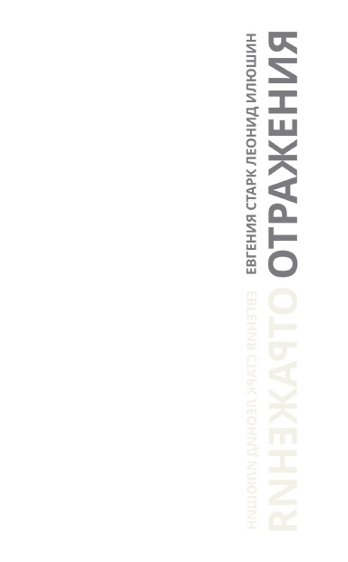
Moon Songs
A hardcover collection of original lullabies, with both languages set side by side.
Сборник авторских колыбельных в твёрдом переплёте — оба языка рядом.
Buy on Lulu →Купить на Lulu →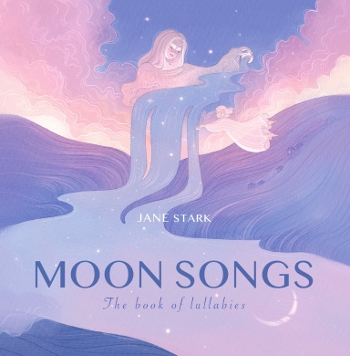
I Live You
Я живу тебя
The original Russian-language collection. Republishing on Lulu later this year.
Оригинальный сборник на русском. Будет переиздан на Lulu в этом году.
Returning soonСкоро вернётся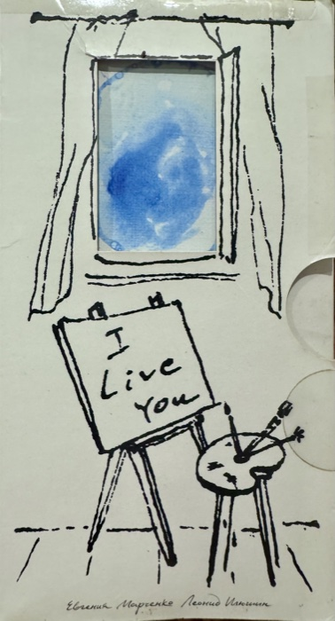
Painting
Живопись
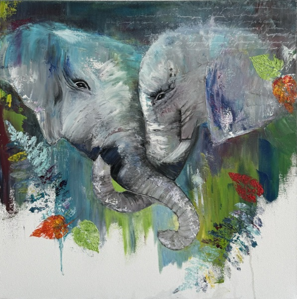
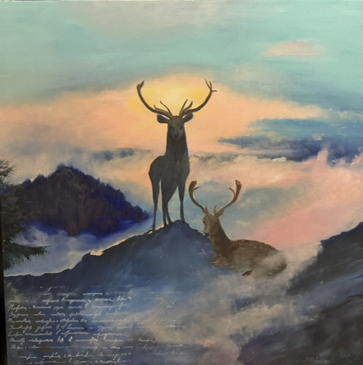
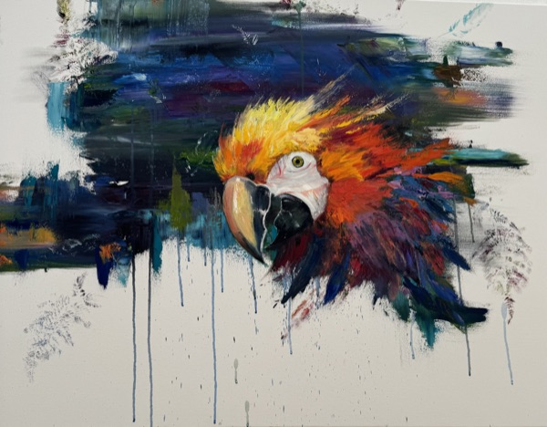
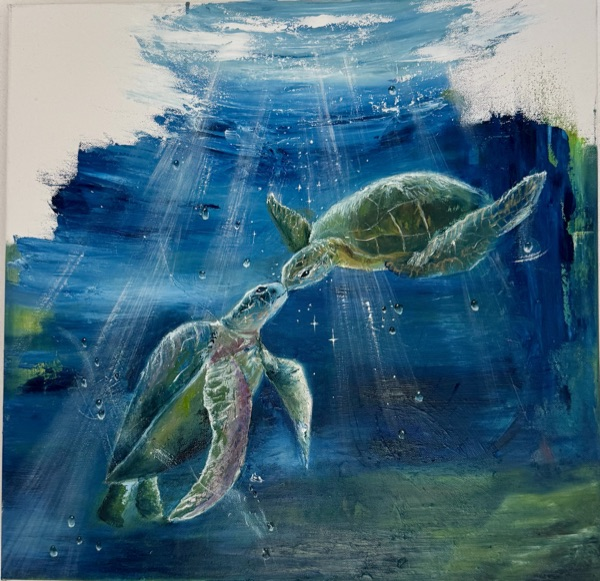
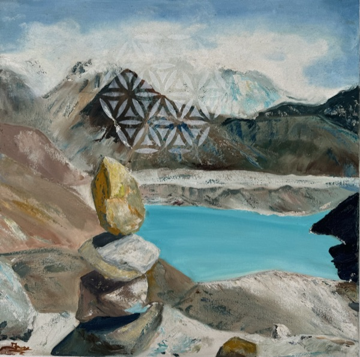
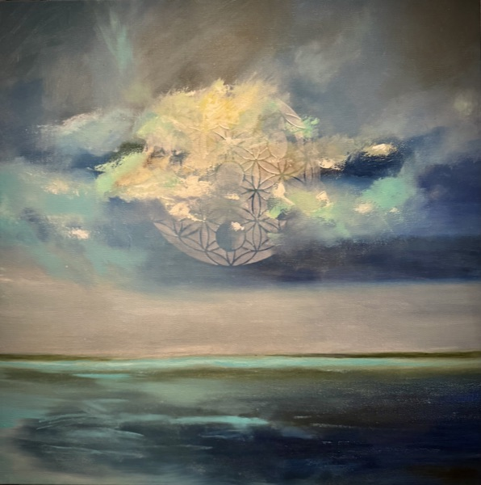
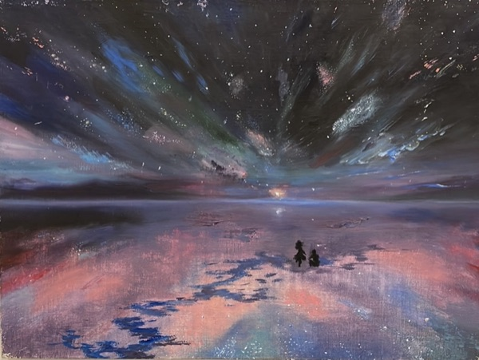
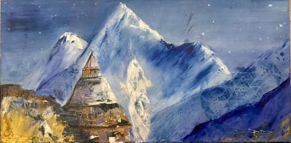